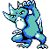
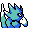

#055
Golduck
WaterPsychic
Often seen swim- ming elegantly by lake shores. It is often mistaken for the Japanese monster, Kappa
Base stats Total 425
HP80
Attack82
Defense78
Speed85
Special100
Details
- Species
- Duck
- Height
- 5'07"
- Weight
- 169.0 lb
- Catch rate
- 75
- Base exp
- 174
- Growth
- Medium Fast
Level-up moves
LevelMoveType
StartScratchNormal
StartTail WhipNormal
StartDisableNormal
Lv 17ConfusionPsychic
Lv 25BubblebeamWater
Lv 33PsybeamPsychic
Lv 35WaterfallWater
Lv 39PsychicPsychic
Lv 43Hydro PumpWater
Lv 48AmnesiaPsychic
Evolution
Evolves from Psyduck
Where to find
TM / HM
TM01 Mega PunchTM05 Mega KickTM06 ToxicTM08 Body SlamTM09 Take DownTM10 Double-EdgeTM11 BubblebeamTM12 Water GunTM13 Ice BeamTM14 BlizzardTM15 Hyper BeamTM17 SubmissionTM18 CounterTM19 Seismic TossTM20 Pay DayTM28 DigTM29 PsychicTM31 MimicTM32 Double TeamTM34 BideTM35 MetronomeTM39 SwiftTM44 RestTM50 SubstituteHM03 SurfHM04 StrengthHM05 Flash